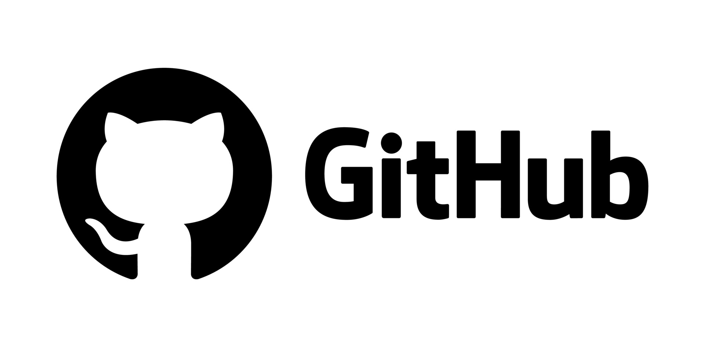

Vahan
Sahakyan
Software
Engineer

Building Distributed Systems at Scale
Designing production-grade distributed systems. Microservices, event-driven architecture, Kubernetes orchestration, infrastructure automation.
About Me
Senior Backend Engineer with System Design & Architecture Expertise
- 5+ years designing and building distributed systems at scale. Deep expertise in microservices architecture, event-driven patterns (Kafka/Redpanda), CQRS, and event sourcing. Demonstrated through production systems and open-source POC (10+ microservices, polyglot databases, full observability).
- Polyglot backend engineer: Go, Node.js/TypeScript, and Java/Spring. Built and shipped production REST and gRPC APIs across multiple languages. Currently Go-focused for performance-critical systems; strong with Node.js/TypeScript for full-stack work. Java/Spring experience in previous roles designing scalable backend services and microservices architectures.
- Database architecture & selection. Production experience with MongoDB (Forbes), PostgreSQL, ScyllaDB (time-series), ClickHouse (event stores). Understand tradeoffs between relational, document, time-series, and analytical databases — pick the right tool for the problem.
- Infrastructure & Kubernetes operational expertise. Managed multi-tenant production systems (prod/staging/dev isolation), dynamic provisioning via GitOps (ArgoCD, Argo Events), modern networking abstractions (Gateway API). Fluent with k9s, kubectx, Prometheus, Grafana, Jaeger, Loki.
- Observability-first thinking. Built systems with metrics, distributed tracing, and structured logging as core requirements. Understand the operational complexity of running distributed systems at scale.
- Technical decision-maker. Own architectural choices from data model through API design to deployment. Clear communicator of complex technical tradeoffs, with proven system design documentation and code review leadership.
- EXPERIENCE
-
 Full Stack Software Engineer
Full Stack Software Engineer
Forbes · Contract
May 2024 - Present ·
Jersey City, New Jersey, United States · Remote
Platform Team, Bertie CMS, Vetted Team
• Contributing to multi-tenant Kubernetes infrastructure across prod/staging/dev with namespace isolation
• Backend development on event-driven systems (Kafka-compatible brokers, async patterns)
• Working with GitOps automation (ArgoCD, Argo Events) for infrastructure provisioning
• Production MongoDB experience: schema design, scaling concerns, consistency patterns
• Code reviews and mentoring junior engineers on backend/systems patterns
• Full-stack contributions across frontend, backend, and infrastructure layers
Skills: Go · Node.js · TypeScript · Kubernetes · Docker · MongoDB · PostgreSQL · ArgoCD · Argo Events · Prometheus · Grafana · GCP · Linux · REST APIs · React
 Full Stack Software Engineer
Full Stack Software Engineer
Optimum Partners - Armenia · Full-time
May 2024 - Present ·
Yerevan, Armenia · Hybrid
[ Embedded at Forbes.com ]
• Full-stack development on Forbes platform (backend APIs, frontend features, infrastructure)
• Backend focus: designing REST/gRPC services, Kubernetes orchestration, database architecture
• Reviewing technical interviews and contributions from candidates
• Mentoring junior engineers on best practices and system design
• Maintaining 100% code coverage while shipping new features
• Technical documentation: architecture decisions, runbooks, design patterns
Skills: Full-Stack Development · Go · Node.js · TypeScript · React · Kubernetes · Docker · Microservices · MongoDB · PostgreSQL · GCP · Linux · Technical Leadership
 Software Engineer (Backend & Infrastructure)
Software Engineer (Backend & Infrastructure)
Datafoundry · Full-time
Sep 2023 - May 2024 · 9 mos
Yerevan, Armenia · Hybrid
[ DF mSignal AI, DF Literature Monitor, DF mSafety AI ]
• Led large-scale refactoring across microservices architecture
• Set up and maintained frontend quality tools (ESLint) in legacy codebases
• Achieved minimum 70% unit test coverage, reduced code smells for SonarQube quality gates
• Restructured static components into reusable library-style modules for ecosystem-wide use
• Technical leadership and peer mentoring on code quality and design patterns
Skills: JavaScript · TypeScript · React · Spring · Node.js · Code Review · Technical Design · ESLint · Webpack · Jest · Technical Leadership
 Software Engineer
Software Engineer
Warner Music Group · Contract
Nov 2022 - Sep 2023 · 11 mos
New York, United States · Remote
ADA (Alternative Distribution Alliance) & DSPs (Spotify, Apple Music, etc.)
Music Royalty and Publishing Platform
Skills: TypeScript · React · Design Patterns · Java · Business Analysis · Analytics · UX · Redux · JavaScript · Node.js · Material-UI
 Software Engineer
Software Engineer
NWSLAB · Full-time
Nov 2022 - Sep 2023 · 11 mos
Yerevan, Armenia · Hybrid
[ Carpathia UI - Warner Music Group, ADA ]
• Worked in cross-cultural environment spanning Russia, Ukraine, Armenia, US, Romania, India
• Contributed to architectural decision-making with backend engineers and Solutions Architect
• Transformed Figma designs into high-quality, maintainable code
• Peer-reviewed code under Tech Lead's guidance
• Implemented generic TypeScript utility types for project-specific needs
Skills: JavaScript · React · TypeScript · ESLint · Redux · Spring · Node.js
Software Engineer
Datafoundry · Full-time
Mar 2022 - Nov 2022 · 9 mos
Yerevan, Armenia · Hybrid
[ DF mSignal AI - Clinical Trials, Signal Management ]
• Kick started a dashboard analytics app, with 4 user roles.
• Integrated and reused the legacy version of the project.
• Optimized the performance by modifying the state management.
• Refactored the codebase following the SOC concept and DRY principle.
• Designed tech solutions by collaborating with the back-end engineers.
Skills: JavaScript · React · Code Review · Saga · Ant Design · Spring · Node.js
- EDUCATION
-
Anthropic Academy: Claude with Google Cloud's Vertex AITool-calling, Agents, RAG, MCP, Vision, Prompt Caching, Claude Code, Computer Use2025
Bootcamp - "BPC Armenia" [C++, Python, Linux, Bash]Artak Yenokyan - Sr. Engineering Manager at Siemens EDA2018-2019
Course - The Complete JS CourseUDEMY: Jonas Schmedtmann2021-2022
Course - Node/Express BootcampUDEMY: Jonas Schmedtmann2021-2022
Course - React/Redux CourseZTM: Andrei Neagoie2021-2022
Course - Java Core 11 CourseJohn Purcell: Derby, UK2022-2023
Building since 2022
Systems that scale operationally. Infrastructure that engineers trust. Architecture that solves real problems.
Expertise
Distributed Systems Design 01
Microservices Architecture 02
Kubernetes & Infrastructure 03
Event-Driven Architecture 04
Technical Leadership 05
I design and build scalable, fault-tolerant systems that solve complex operational problems. Focus on observability, reliability, and architectural clarity for teams operating at scale.
Projects
Featured Work
Distributed Social Network
Production-grade microservices architecture. 10+ Go services, event-driven patterns, CQRS event sourcing, polyglot databases (ScyllaDB, PostgreSQL, ClickHouse), full observability (Prometheus, Grafana, Jaeger, Loki). Helm charts for Kubernetes deployment. Demonstrates system design depth: data consistency, fault tolerance, distributed tracing, metrics collection.
Code Inspect
Full-stack code analysis platform. React frontend with modern state management, Spring Boot backend for processing and analysis. Demonstrates end-to-end system design and integration between frontend and backend services.
CRWN Clothing
E-commerce application built with React and Firebase. Real-time database integration, state management with Redux, and responsive UI design. Demonstrates full-stack development capabilities and modern JavaScript practices.
Contact
Let's Build Together
I'm open to discussing new opportunities, technical challenges, and collaboration. Let's talk about how we can build something great.
Call me:
+374 95 27 68 27
Say hi:
vahan.codes@gmail.com